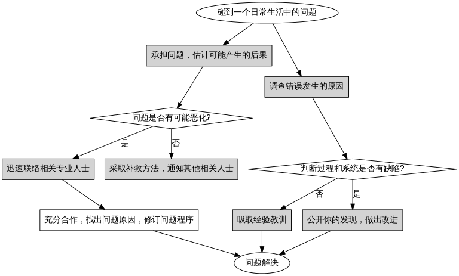

四、咨询个案分析
本篇侧重于对问题的分析。
常见症状分析
症状：被害幻想丰富
背景：某人，女，中年妇女，教育程度低（小学文化），闲在家中，有退休工资，被亲友拉进东方闪电洗脑。生活安逸平淡，却喜无事生非，胡思乱想。
事件：由于停电，该女自己去检查修理，每次都能修好，但是一用就坏，找不到原因，就开始丰富的联想，正好听见楼下来了当地的街道民警，于是就以为是被人监视并遥控停电，故意和她做对，主观臆断，捕风捉影，胡乱猜疑，于是开始大骂，趁机发泻情绪。
分析：理性思维出现故障，基本上的常识概念被破坏;无法自己意识到陷于错误的逻辑推理中，得出奇怪的结论。
解决方法：不要对其产生正面的冲突，以思想教育为主，帮助其梳理问题，找出问题的真正原因。
注意事项：要注意问题的升级可能性，因为他们有无中生有，小事变大的本领。从一个问题跑到另外一个问题上的本领，最后加固自己对社会的理解和认识，进行逻辑上的自洗脑。
症状：看待问题主观，无法接受不同的意见，思维能力低，情绪控制能力差
背景：某人，女，中年妇女，教育程度低（小学文化），闲在家中，有退休工资，被亲友拉进东方闪电洗脑。生活安逸平淡，却喜无事生非，胡思乱想。
事件：该女请电信公司上门维修网络，然后一口咬定是网络问题，声明一用网络就会跳闸停电，甚至怀疑被公安局监控，疑神疑鬼，思维混乱。在维修人员反复为她解释问题时，她也仍然坚持自己的看法。难以沟通，一直强调自己被远程控制了。因为维修人员无法和其沟通，最后放弃，离开。事后，该女继续运用负面发散思维的能力，开始脑补，把问题全部推在别人身上，一点也不检讨自己的问题，又开始胡言乱语，陷入混乱的情绪中。对周围人进行恶语谩骂，进行人身攻击。以骂人为发泄不满的方式，达到心理的自平衡。再以邪教思想来进一步武装自己的思想。加强自己对社会的不满感，重复反社会的言论。大有一切以阶级斗争为纲的文革味道。
分析：以情绪代替思考，始终有自己的主观答案，对于专业人士的意见不听取不接受，自己沉迷在自己永远正确的思维怪圈中。无法解决实际问题，凭运气，凭经验（错误）;理性思维出现故障，基本上的常识概念被破坏; 无法自己意识到陷于错误的逻辑推理中，得出奇怪的结论。
解决方法：不要对其产生正面的冲突，以思想教育为主，帮助其梳理问题，找出问题的真正原因。首先判断面临的问题，屏除干扰因素，找出根本问题，确定问题类型，找出已验证可采用的方法，绘制简单的流程图，引导其思维。
注意事项：先判断她是情绪问题，还是逻辑问题，先处理情绪，再处理具体问题。如果她在混乱的情绪中，如果有有效的沟通方法能够安抚其情绪，或者尝试转移其注意力，再来和她商量下一步问题的解决。如果一时找不到好的方法，可以回避，避免成为她混乱情绪的直接发泄对象。等其情绪正常，再尝试和她沟通，效果会好一些。对于她们习惯性的言语粗俗，最好不要放在心上，要训练自己的承受能力。有自己的主见，不要跟着她的思路跑，要让她跟着你的节奏来。要注意问题的升级可能性，因为他们有无中生有，小事变大的本领。从一个问题跑到另外一个问题上的本领，最后加固自己对社会的理解和认识，进行逻辑上的自洗脑。
症状：看新闻，发牢骚，发泄情绪
背景：某人，女，中年妇女，教育程度低（小学文化），闲在家中，有退休工资，被亲友拉进东方闪电洗脑。生活安逸平淡，却喜无事生非，胡思乱想。
事件：平日里，养成了看电视专门看新闻，而且专门看负面新闻的习惯，一边看一边骂一边给出评价，听上去基本上都是一些不着调的话。无非是政府要完蛋，世界要有大灾祸，等着神来审判，她则是局外人一样。
分析：邪教洗脑的一部分，变成了日常习惯，需要警惕。为什么她总要看新闻呢？背后有什么力量驱使她去关注新闻呢？请参见《为什么她总要看新闻》一文
解决方法：可以帮她换台(看一些文教节目、科教节目、常识性节目、有意义的电视剧、轻松搞笑类节目)。帮助其设计日程表
注意事项：要注意问题的升级可能性，因为他们有无中生有，小事变大的本领。从一个问题跑到另外一个问题上的本领，最后加固自己对社会的理解和认识，进行逻辑上的自洗脑。
表7-1 几种不良个性特征与患严重躯体疾病后心理反应的关系
丛 |
性格类型 |
心理行为特点 |
对疾病或应激的反应 |
可能的干预方法 |
| 古怪性/怪癖性 | 偏执型 | 敏感，多疑；固执；常与“迫害者”争吵 | 认为患病是来源于外界的迫害；治疗过程也多疑，可能认为是有意伤害 | 向病人详细告知治疗护理过程；耐心倾听病人主诉；承认患病与住院是一件很难做的事 |
| 孤僻型 （aloof） 或分裂型 （schizoid） | 离群，不关心周围事物；工作与生活尽可能不与人打交道 | 认为患病是一种对生活的严重干扰；可能病后更离群，孤僻 | 尊重病人的离群索居行为；给与热情的照顾 | |
| 戏剧性/情绪性 | 戏剧型 （癔病样） | 轻诺寡信，好交友，易形成性关系；常用否认，回避，压抑或“忘却”来对待焦虑；感情多变，行为戏剧化；可能有恐怖症状 | 疾病被体验为一次女性化或男性化的侵袭 | 欣赏其吸引力；如果焦虑很重，可给予一般性的保证（非详细的）；让病人参与讨论担心的问题 |
| 自恋型 （narcissistic） | 很难求助或接受帮助；强制自己表现得坚强，适应性强；担心自己会依赖他人 | 认为患病对自己是一场考验；努力表现出自己的耐受力（如过度运动）和独立性（如不遵医嘱） | 让病人积极参与治疗过程；承认病人的耐受力 | |
| 自我牺牲型 （martyr like） | 有反复患病史；有坚定的自我牺牲性；自觉不被人欣赏 | 认为患病是一种理应有的惩罚；依从性减少 | 欣赏病人所承担的困难；不表示同情与安慰；告诉病人现有的治疗也有利于别人 | |
| 焦虑性/恐惧性 | 强迫型 | 过分拘泥于细节；谨慎地表达情绪、痛苦、恐惧；犹豫不决，易焦虑 | 认为疾病会威胁自控力；内控制力下降，表现为摸棱两可，焦虑 | 给予病人客观、充分的有关疾病的信息；帮助病人控制焦虑；与病人一起参与制订治疗计划（如控制饮食，运动等） |
| 依赖型 | 渴望被人关注；迫切需要别人无时不在的照顾；常反复要求得到被照顾的保证 | 害怕被遗弃，无助；焦虑增加，导致求助的要求增加 | 告诉病人可得到尽可能完全的照顾；对无法照顾之处给予病人尽可能合理的解释；尽可能满足病人的要求 |
常见错误思维分析
根据常见症状分析一文中，我们可以看到一个看待问题主观，无法接受不同的意见，思维能力低，情绪控制能力差的样子，那么她们常见的错误思维背后的因素是什么呢？本文尝试加以分析总结。
我们看到一个理性的解决问题的人，他们的思考模式是这样的： 事实描述用椭圆形表示 行动方案用矩形表示 问题用菱形表示 箭头代表流动方向

而一个非理性的人他们解决问题的思考模式又是怎样的呢？请看下图：
我们尝试比较两者的不同。发现前者是以理性为主要思维模式的，后者则是以情绪为主导解决问题的。由于思维模式的不同，其处理问题的方式也必然不同，导致的结果也不同。

文字我思索一下再补充，从这张图，大家领悟到了什么呢？希望能看到大家的想法。
我的结论是，一个人如果习惯以情绪做导向，然后树立一个先验的目标或价值观，最后再给其找理由证明正确性。这样做必然容易得到偏狭的结果。或者说，以情绪为导向的人，其目标并不是找到正确的结果，而是为了给自己的情绪发泄找一个合意的突破口。同时这样的人生活必然麻烦不断，人际关系也难以和谐，生活必然困难重重。直到他们能够开始认识到自己身上的问题，生活才会真的有所改变。换句话说，我们除非帮助他们认识到自己身上存在的问题，否则我们不能改变更多。
本章所处位置